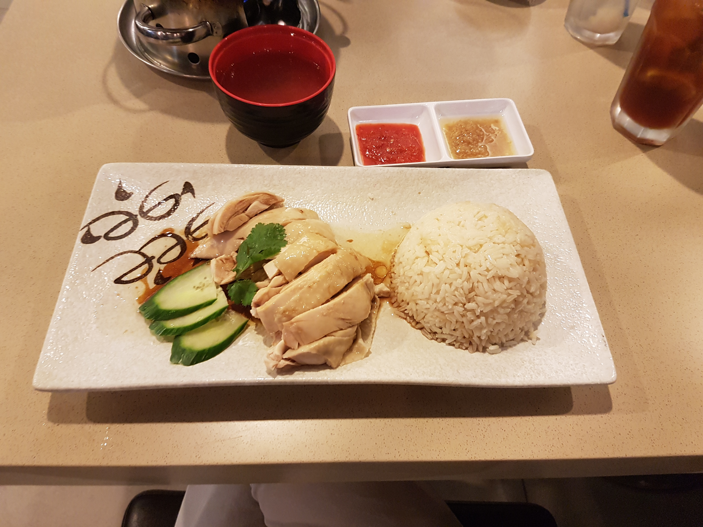

A PLATE OF COMFORT
Good food.
Simple happiness.
Tender chicken, fragrant rice and a little chilli on the side. Take a break and enjoy a comforting plate of chicken rice.
Explore our menu →
ABOUT US
One simple dish. Plenty to enjoy.
INTI Chicken Rice is a neighbourhood chicken rice restaurant concept for students and local office workers. Our menu brings together familiar flavours, generous comfort and affordable prices for an easy lunch.
Fragrant rice
Chicken favourites and sides
Soup with every plate
A LITTLE FOOD INSPIRATION
Chicken, rice and a little inspiration.
A short look at Indonesian-style chicken and rice preparation. This stock clip is food inspiration, not a Hainanese recipe tutorial or footage from our restaurant.
Video by setengah lima sore / Pexels. Open video separately.
CONTACT US
We would love to hear from you.
INTI Chicken Rice
Sample opening hours: Daily, 10:00 am – 8:00 pm
Address: To be confirmed
Email: hello@example.com (sample)
A student website project. Restaurant details and prices are illustrative.
Photo and video credits
Hainanese chicken rice: Misaochan, CC BY 4.0.

Roasted chicken rice: Wiki Asmah, CC BY-SA 4.0.

Soya sauce chicken: Choo Yut Shing, CC BY 2.0.
.jpg){kind=link}
Original photo files are included unchanged. Display cropping is applied with CSS; the roast chicken photo and its display crop remain under CC BY-SA 4.0.
Video: Outdoor Cooking Indonesian Chicken and Rice by setengah lima sore, used unchanged under the Pexels License.